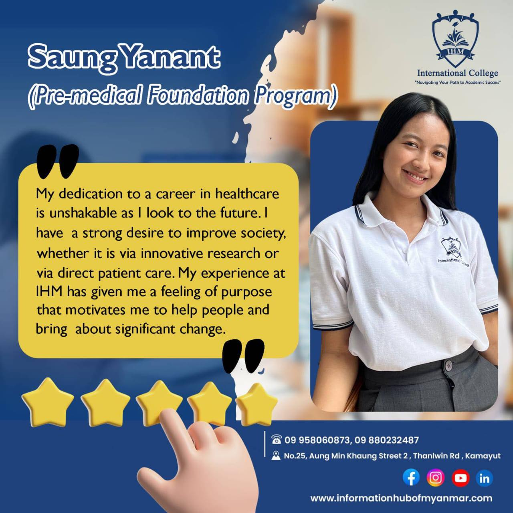
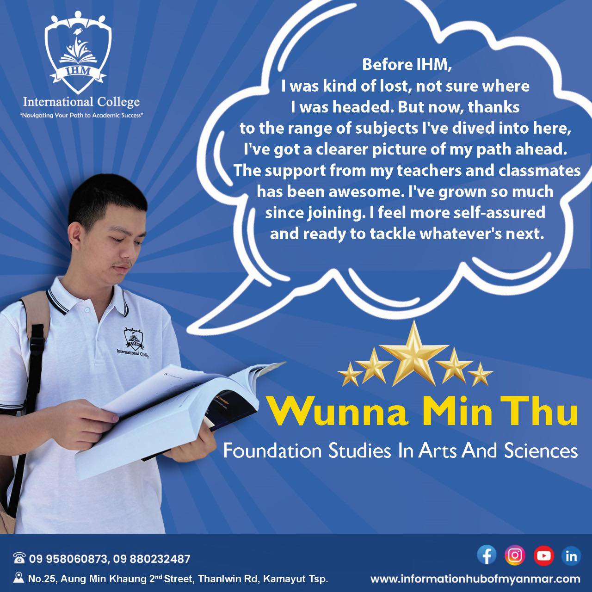
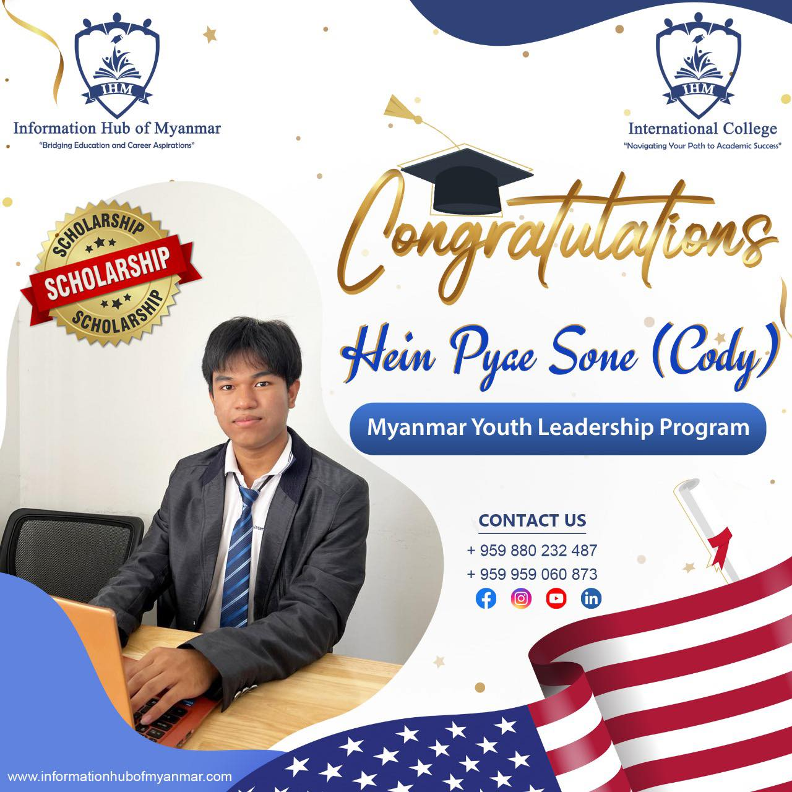

<!-- Testimonials -->

<!DOCTYPE html>
<html lang="en">
  <head>
    <title>IHM</title>
    <meta name="description" content="website description" />
    <meta name="keywords" content="website keywords, website keywords" />
    <meta http-equiv="content-type" content="text/html; charset=windows-1252" />
    <link rel="stylesheet" type="text/css" href="style.css" />
    
  </head>
  <body>
    <div id="main">
      <div id="header">
        <div id="logo">
          <div id="logo_text">
            <!-- class="logo_color", allows you to change the color of the text  -->
            <h1>
              <a href="home.html">IHM <span class="logo_colour">International Collage</span></a>
            </h1>
            <h2>"Let us be your Information Hub, the Bridge and the Global Platform to connect you to the world "</h2>
          </div>
        </div>
        <div id="menubar">
          <ul id="menu">
            <!-- put class="selected" in the li tag for the selected page - to highlight whcih page you're on -->
            <li ><a href="home.html">Home</a></li>
            <li><a href="examples.html">Activites</a></li>
            <li class="selected"><a href="page.html">Testimonials</a></li>
            <li><a href="another_page.html">Another Page</a></li>
            <li><a href="contact.html">Contact Us</a></li>
          </ul>
        </div>
      </div>
      <div id="content_header"></div>
      <br>
      <h1 style="text-align: center; color: #ffbb00;"><b><ins>Student Testimonial</ins></b></h1> <br>
      <div id="site_content" style="width: 65%;">
        
          <div id="content" style=" width: 58%; border: black; box-sizing: border-box; color: black;">
            
            <!-- insert the page content here -->
            <p style=" text-align: justify;">
<br>
                IHM ရဲ့ Pre- Medical Foundation အတန်းမှ ကျောင်းသူချောလေးတစ်ဦးဖြစ်တဲ့ Saung Yanant ကနေ သူရဲ့ IHM foundation program ကို ရွေးဖြစ်ပုံအကြောင်းနဲ့ သူရဲ့ goal တွေကို အခုလိုပဲပြောပြပေးထားပါတယ်💁🏻‍♀️
                
                👩🏻‍🎓 “I’m Saung Yanant,a student currently enrolled in IHM international college.My enrollment at IHM International College's Pre-Medical Foundation Program marked a turning point in my academic career. I wasn't sure where I wanted to go, but the program's vast curriculum helped me find direction and meaning. IHM introduced me to a broad range of subjects, which enabled me to go deeper into my interests and have a better understanding of healthcare.
                
                Classmates and teachers at IHM provide a supportive environment that has been essential to my growth. There is enough guidance and support available, which creates an environment where I feel empowered to work toward my objectives. Academically and emotionally, I have thrived in the presence of like-minded others.
                
                My dedication to a career in healthcare is unshakable as I look to the future. I have a strong desire to improve society, whether it is via innovative research or via direct patient care. My experience at IHM has given me a feeling of purpose that motivates me to help people and bring about significant change.
                
                With the support of IHM's tools and mentorship program, I'm eager to carry on with my quest for professional and personal growth. I'm getting closer to achieving my goals and living a fulfilled life with every step I take forward. I am appreciative of the chances that lay ahead since IHM has given me the platform I need to achieve."
                
                လမ်းပျောက်နေတဲ့ လူငယ်တွေ လမ်းကြောင်းတစ်ခုပေါ်ရောက်အောင် IHM ရဲ့ Foundation Programmes တွေကိုအခုပဲ ဆက်သွယ်စုံစမ်းမေးမြန်းလိုက်ပါတော့နော်📲
<br>
            </p>
          </div>
        </div>
        <div id="site_content" style="width: 65%;"><hr><br><br>
              <div id="content" style=" width: 100%; border: black; box-sizing: border-box; color: black;">
                
                
                <!-- insert the page content here -->
                <p style=" text-align: justify; width: 58%;" >
    <br><br><br><br>
    Foundation Studies in Arts and Sciences အတန်းမှ ကျောင်းသားလေးတစ်ဦးဖြစ်တဲ့ Wunna Min Thu ကနေ သူရဲ့ IHM foundation program ကို ရွေးဖြစ်ပုံအကြောင်းနဲ့ သူရဲ့ goal တွေကို အခုလိုပဲပြောပြပေးထားပါတယ်💁🏻‍♂️
    🗣️ “Hello, I'm Wunna Min Thu, and I'm currently enrolled in IHM International College's Art and Science Program.
    My journey to IHM began as I tried to find a program that could provide a strong foundation for my future, while being both time-efficient and cost-effective after completing my IGCSE. With the help of friends' recommendations and IHM's social media presence, I discovered a program that aligned perfectly with my aspirations.
    What I really like about IHM is that besides studying, they also focus on activities outside of class. These activities have helped me feel more sure of myself and ready for life beyond school.Before IHM, I was kind of lost, not sure where I was headed. But now, thanks to the range of subjects I've dived into here, I've got a clearer picture of my path ahead. The support from my teachers and classmates has been awesome. I've grown so much since joining. I feel more self-assured and ready to tackle whatever's next.”
    လမ်းပျောက်နေတဲ့ လူငယ်တွေ လမ်းကြောင်းတစ်ခုပေါ်ရောက်အောင် IHM ရဲ့ Foundation Programmes တွေကိုအခုပဲ ဆက်သွယ်စုံစမ်းမေးမြန်းလိုက်ပါတော့နော်📲    <br><br>
                </p>
              </div>
            </div>
         <div id="site_content" style="width: 65%;"><hr><br><br>
              <div id="content" style=" width: 100%; border: black; box-sizing: border-box; color: black;">
                
                
                <!-- insert the page content here -->
                <p style=" text-align: justify; width: 58%;" class="right" >
    <br><br><br><br><br>
    🧑🏻‍🏫 IHM International College မှာ Foundation in Art and Sciences တက်ရောက်နေသော် ကျောင်းသားတစ်ဦးဖြစ်တဲ့ Cody ကတော့ U.S Department of State ကပေးတဲ့ Myanmar Youth Leadership Program အတွက် scholarship ရသွားတဲ့အတွက် အထူးဝမ်းမြောက် ဂုဏ်ယူပါတယ်

    👨🏻‍🎓 Hein Pyae Sone (Cody)’s testimonial;
    
    “Going to the Myanmar Youth Leadership Program was a game-changer for me. IHM helped me nail the interview part. They practiced with me until I could take on any question confidently. It was like getting a behind-the-scenes guide on how to impress and stand out.
    
    Now, I'm all fired up to use what I've learned to make a splash. Thanks to IHM's interview prep, not only did I get into an amazing program, but I also gained the confidence to lead and make real changes. I'm ready to take on challenges and help out where I can, showing everyone what us teens can do when we're given the chance.”
    
    👩🏻‍🏫IHM International College မှာရှိတဲ့ Foundation Programs တွေနဲ့ SAT,IELTS,GED အစရှိတဲ့ programs တွေကို စုံစမ်းချင်ရင်တော့ page messenger ကနေတစ်ဆင့်စုံစမ်းနိုင်ပါတယ်။                </p>
              </div>
            </div>
            <br><br>
        <div id="content_footer"></div>
        <div id="footer">
          <p>
            <a href="home.html">Home</a>|
            <a href="examples.html">Activites</a> |
            <a href="page.html">Testimonials</a> |
            <a href="another_page.html">Another Page</a> |
            <a href="contact.html">Contact Us</a>
          </p>
          <p>
            Copyright &copy; simplestyle_horizon |
            <a href="http://validator.w3.org/check?uri=referer">HTML5</a>|
            <a href="htt://jigsaw.w3.org/css-validator/check/refereer">CSS</a>|
            <a href="http://www/HTML5webtemplates.co.uk">Simple web templates by HTMl5</a>
          </p>
        </div>
      </div>
  </body>
</html>
